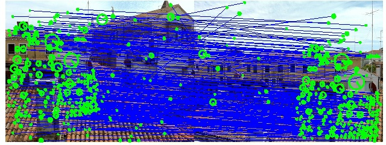
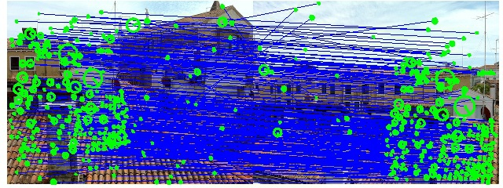
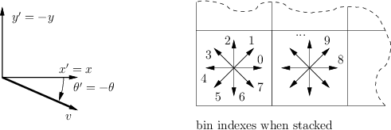

Table of Contents
The Scale-Invariant Feature Transform (SIFT) bundles a feature detector and a feature descriptor. The detector extracts from an image a number of frames (attributed regions) in a way which is consistent with (some) variations of the illumination, viewpoint and other viewing conditions. The descriptor associates to the regions a signature which identifies their appearance compactly and robustly. For a more in-depth description of the algorithm, see our API reference for SIFT.
Extracting frames and descriptors
Both the detector and descriptor are accessible by
the vl_sift MATLAB command (there is a similar command
line utility). Open MATLAB and load a test image
I = vl_impattern('roofs1') ;
image(I) ;

The vl_sift command requires a single precision gray
scale image. It also expects the range to be normalized in the [0,255]
interval (while this is not strictly required, the default values of
some internal thresholds are tuned for this case). The image
I is converted in the appropriate format by
I = single(rgb2gray(I)) ;
We compute the SIFT frames (keypoints) and descriptors by
[f,d] = vl_sift(I) ;
The matrix f has a column for each frame. A frame is a
disk of center f(1:2), scale f(3) and
orientation f(4) . We visualize a random selection of 50
features by:
perm = randperm(size(f,2)) ;
sel = perm(1:50) ;
h1 = vl_plotframe(f(:,sel)) ;
h2 = vl_plotframe(f(:,sel)) ;
set(h1,'color','k','linewidth',3) ;
set(h2,'color','y','linewidth',2) ;
We can also overlay the descriptors by
h3 = vl_plotsiftdescriptor(d(:,sel),f(:,sel)) ;
set(h3,'color','g') ;
Basic matching
SIFT descriptors are often used find similar regions in two
images. vl_ubcmatch implements a basic matching
algorithm. Let Ia and Ib be images of the
same object or scene. We extract and match the descriptors by:
[fa, da] = vl_sift(Ia) ;
[fb, db] = vl_sift(Ib) ;
[matches, scores] = vl_ubcmatch(da, db) ;
 

For each descriptor in da, vl_ubcmatch finds
the closest descriptor in db (as measured by the L2 norm
of the difference between them). The index of the original match and
the closest descriptor is stored in each column of
matches and the distance between the pair is stored in
scores.
Matches also can be filtered for uniqueness by passing a third
parameter to vl_ubcmatch which specifies a threshold.
Here, the uniqueness of a pair is measured as the ratio of the
distance between the best matching keypoint and the distance to the
second best one (see vl_ubcmatch for further details).
Detector parameters
The SIFT detector is controlled mainly by two parameters: the peak threshold and the (non) edge threshold.
The peak threshold filters peaks of the DoG scale space that are too small (in absolute value). For instance, consider a test image of 2D Gaussian blobs:
I = double(rand(100,500) <= .005) ;
I = (ones(100,1) * linspace(0,1,500)) .* I ;
I(:,1) = 0 ; I(:,end) = 0 ;
I(1,:) = 0 ; I(end,:) = 0 ;
I = 2*pi*4^2 * vl_imsmooth(I,4) ;
I = single(255 * I) ;
We run the detector with peak threshold peak_thresh by
f = vl_sift(I, 'PeakThresh', peak_thresh) ;
obtaining fewer features as peak_thresh is increased.
From top:
The edge threshold eliminates peaks of the DoG scale space whose curvature is too small (such peaks yield badly localized frames). For instance, consider the test image
I = zeros(100,500) ;
for i=[10 20 30 40 50 60 70 80 90]
I(50-round(i/3):50+round(i/3),i*5) = 1 ;
end
I = 2*pi*8^2 * vl_imsmooth(I,8) ;
I = single(255 * I) ;
We run the detector with edge threshold edge_thresh by
f = vl_sift(I, 'edgethresh', edge_thresh) ;
obtaining more features as edge_thresh is increased:
From top:
Custom frames
The MATLAB command vl_sift (and the command line utility)
can bypass the detector and compute the descriptor on custom frames using
the Frames option.
For instance, we can compute the descriptor of a SIFT frame
centered at position (100,100), of scale 10
and orientation -pi/8 by
fc = [100;100;10;-pi/8] ;
[f,d] = vl_sift(I,'frames',fc) ;
Multiple frames fc may be specified as well. In this
case they are re-ordered by increasing
scale. The Orientations option instructs the program to
use the custom position and scale but to compute the keypoint
orientations, as in
fc = [100;100;10;0] ;
[f,d] = vl_sift(I,'frames',fc,'orientations') ;
Notice that, depending on the local appearance, a keypoint may have multiple orientations. Moreover, a keypoint computed on a constant image region (such as a one pixel region) has no orientations!
Conventions
In our implementation SIFT frames are expressed in the standard image reference. The only difference between the command line and MATLAB drivers is that the latter assumes that the image origin (top-left corner) has coordinate (1,1) as opposed to (0,0). Lowe's original implementation uses a different reference system, illustrated next:


Our implementation uses the standard image reference system, with
the y axis pointing downward. The frame
orientation θ and descriptor use the same reference
system (i.e. a small positive rotation of the x moves it
towards the y axis). Recall that each descriptor element
is a bin indexed by (θ,x,y); the histogram is
vectorized in such a way that θ is the fastest
varying index and y the slowest.
By comparison, D. Lowe's implementation (see bottom half of the figure) uses a slightly different convention: Frame centers are expressed relatively to the standard image reference system, but the frame orientation and the descriptor assume that the y axis points upward. Consequently, to map from our to D. Lowe's convention, frames orientations need to be negated and the descriptor elements must be re-arranged.
Comparison with D. Lowe's SIFT
VLFeat SIFT implementation is largely compatible with
UBC (D. Lowe's)
implementation (note however that the keypoints are stored in a
slightly different format, see vl_ubcread). The following
figure compares SIFT keypoints computed by the VLFeat (blue) and UBC
(red) implementations.
The large majority of keypoints correspond nearly exactly. The following figure shows the percentage of keypoints computed by the two implementations whose center matches with a precision of at least 0.01 pixels and 0.05 pixels respectively.
Descriptors are also very similar. The following figure shows the percentage of descriptors computed by the two implementations whose distance is less than 5%, 10% and 20% of the average descriptor distance.